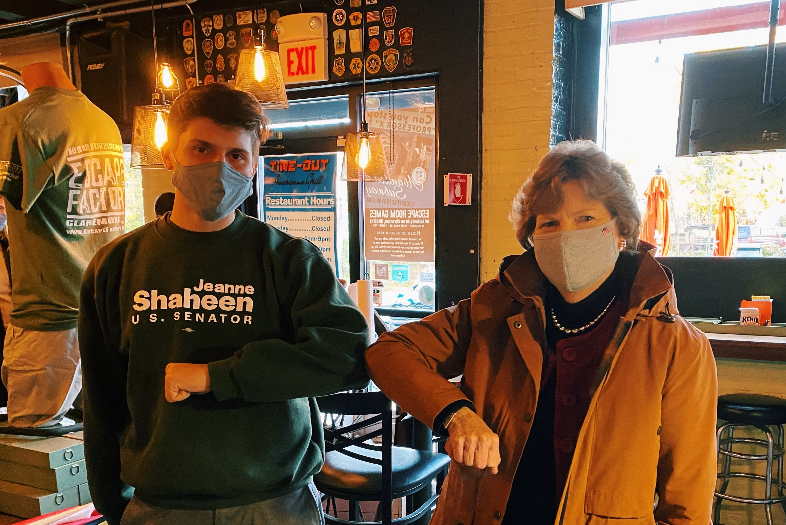

Breakdown: The 2020 U.S. Senate Election in New Hampshire
Why Should I Care?
- Local Elections Matter! While the race for the Presidency gets most of the focus in terms of media attention, local and state-level positions can make fundamental impacts on peoples lives.
- New Hampshire particularly has incredibly close elections. In 2016, the Senate race was determined by 1,016 votes, and the election was partially the reason why Obamacare wasn't repealed.
- As a Dartmouth Student, you have the right to vote in New Hampshire! Knowing more context about your current representation is always helpful, whether you want to apply for an internship or reach out on a specific issue.
Also, I am partially biased towards this race because I worked on the campaign for Shaheen! Here's a photo from when she visited my hometown during the heat of the campaign.

The Race
Photo of Shaheen and Messner, Obtained from WMUR.
Jeanne Shaheen
- First Woman in the United States to serve as both a Governor and a United States Senator.
- Former teacher and campaign manager before running for State Senate, then Governor in 1996.
- Ran for Senate initially in 2002 and lost, was director of the Harvard Institute of Politics before running again in 2008.
- Senator Shaheen serves on the Appropriations and Foreign Relations Committees, and serves as a subcommittee chair in both committees.
Corky Messner
- A West Point graduate and US Army Ranger, Mr. Messner served as an Infantry Company Commander prior to leaving the Army to attend the University of Denver College of Law.
- Founded a law firm, lived in Colorado for much of his life before moving to New Hampshire in the 2010s.
- Endorsed by Former President Trump in the primary election, which many believed led to his win over Fmr. General Don Boldouc.
The Results
| Breakdown by County and Total of General Election Results |
| County |
Messner |
Shaheen |
O'Donnell |
| Belknap |
48.71% |
49.16% |
2.01% |
| Carroll |
44.58% |
53.61% |
1.75% |
| Cheshire |
35.99% |
61.36% |
2.51% |
| Coos |
35.99% |
53.57% |
2.22% |
| Grafton |
33.89% |
63.77% |
2.27% |
| Hillsborough |
40.97% |
56.51% |
2.46% |
| Merrimack |
38.92% |
58.74% |
2.28% |
| Rockingham |
44.14% |
53.73% |
2.09% |
| Strafford |
36.31% |
60.94% |
2.67% |
| Sullivan |
42.64% |
54.58% |
2.74% |
| Total |
40.99% |
56.64% |
2.34% |
Data Obtained by the New Hampshire Secretary of State's Office, and NH GRANIT.
Key Takeaways
- Shaheen comfortably defeated Republican nominee Bryant Messner by 15.6 points and sweeping every single county in the state.
- This marked the first Senate election since 1972 in which the Democrat carried Belknap County, a heavily conservative county that contains Lake Winnipesaukee.
- Shaheen outperformed President Biden in New Hampshire by 8 points
- Her third re-election marks the first time that a Democrat has been re-elected three times in New Hampshire
- Shaheen effectively used her record of delivering for Granite Staters, and the questioning of Messners supposed carpetbagging, to cruise to re-election.
Suprise! Music X Shaheen